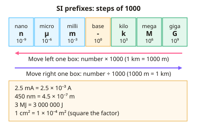

GCSE Physics · Topic 13
Working scientifically and maths skills
Working scientifically and maths skills cover the skills used in every physics question, from units to graphs to evaluation.
We will look at SI units, prefixes and conversions, standard form, significant figures and rearranging equations.
Then we practise drawing and reading graphs, planning investigations, and analysing and evaluating data.
- 5 subtopics
- 316 questions
- Free: 13.1 notes and 7 questions
In this topic
- 13.1Physical quantities, SI units, prefixes and unit conversionsFree below · 53 questions
- 13.2Standard form, significant figures, estimation and rearranging equationsOpen in Full Marks · 58 questions
- 13.3Drawing and interpreting graphs: gradients, areas and tangentsOpen in Full Marks · 60 questions
- 13.4Planning investigations: variables, measurement, accuracy and safetyOpen in Full Marks · 77 questions
- 13.5Analysing and evaluating data: uncertainty, anomalies and conclusionsOpen in Full Marks · 68 questions
13.1 · Free notes
Physical quantities, SI units, prefixes and unit conversions

Key points
- A physical quantity is a number multiplied by a unit, so always write both (e.g. 5.0 m). Missing or wrong units lose marks.
- The SI base units needed at GCSE are the metre (m), kilogram (kg), second (s), ampere (A) and kelvin (K). The kilogram is the only base unit that already contains a prefix.
- Derived units: newton N = kg m/s²; joule J = N m; watt W = J/s; pascal Pa = N/m²; hertz Hz = 1/s; coulomb C = A s; volt V = J/C; ohm Ω = V/A.
- Learn the prefixes: giga (G) 10⁹, mega (M) 10⁶, kilo (k) 10³, centi (c) 10⁻², milli (m) 10⁻³, micro (µ) 10⁻⁶, nano (n) 10⁻⁹.
- Convert to base SI units before substituting into an equation. For example 250 g = 0.25 kg, 45 cm = 0.45 m, 20 mA = 0.020 A and 2.4 kV = 2400 V.
- For time and speed, 1 min = 60 s and 1 h = 3600 s. To convert km/h to m/s divide by 3.6, so 72 km/h = 20 m/s.
- For areas and volumes, square or cube the length factor. 1 cm² = 1 × 10⁻⁴ m², 1 cm³ = 1 × 10⁻⁶ m³, and 1 g/cm³ = 1000 kg/m³.
- The kilowatt-hour (kWh) is a unit of energy: energy (kWh) = power (kW) × time (h). 1 kWh = 3.6 × 10⁶ J.
- Temperature: kelvin = °C + 273 (AQA and OCR use 273). A change of 1 K equals a change of 1 °C, and kelvin is written without a degree sign.
- Scalars have magnitude only (mass, speed, energy, time). Vectors have magnitude and direction (force, velocity, acceleration, displacement).
- Check that the unit of your answer matches the quantity asked for. In tables put the unit in the column heading (e.g. Length / cm) and choose instruments with suitable resolution, such as a ruler to 1 mm.
In more detail
- Worked conversion: 72 km/h = 72 ÷ 3.6 = 20 m/s; 3.5 kW = 3500 W; 450 mA = 0.450 A.
- Area conversion: 50 cm² = 50 × 10⁻⁴ m² = 5.0 × 10⁻³ m² (because 1 cm = 10⁻² m, so 1 cm² = 10⁻⁴ m²).
- Worked kWh: a 2.5 kW heater for 4 hours uses 10 kWh; at 30p per kWh it costs £3.00.
- Micro and nano: 1 µm = 10⁻⁶ m; 1 nm = 10⁻⁹ m; visible light wavelengths are about 400–700 nm.
Practice
Physical quantities, SI units, prefixes and unit conversions: 7 questions
Pick an answer to check it, or open the answer for the explanation.
1. Which of these is NOT an SI base unit?
- kelvin
- ampere
- newton
- kilogram
Show answer
C: newton. The newton is a derived unit (kg m/s²). The kilogram, ampere and kelvin are all SI base units.
2. A current of 350 mA is written in amperes as:
- 350 000 A
- 0.35 A
- 35 A
- 0.035 A
Show answer
B: 0.35 A. Milli means 10⁻³, so 350 mA = 350 × 10⁻³ A = 0.35 A.
3. A power line operates at 2.4 kV. What is this in volts?
- 0.0024 V
- 240 V
- 2400 V
- 24 000 V
Show answer
C: 2400 V. Kilo means 10³, so 2.4 kV = 2.4 × 1000 = 2400 V.
4. A mass of 250 g hangs from a spring. Gravitational field strength is 10 N/kg. What is its weight?
- 25 N
- 2500 N
- 2.5 N
- 0.25 N
Show answer
C: 2.5 N. Convert to kg first: 250 g = 0.25 kg. W = mg = 0.25 × 10 = 2.5 N.
5. A car travels at 72 km/h. What is its speed in m/s?
- 20 m/s
- 259 m/s
- 72 000 m/s
- 7.2 m/s
Show answer
A: 20 m/s. 72 km/h = 72 000 m ÷ 3600 s = 20 m/s. Dividing by 3.6 gives the same result.
6. Which quantity and SI unit pair is correct?
- Power and joule
- Pressure and pascal
- Charge and ampere
- Frequency and watt
Show answer
B: Pressure and pascal. Pressure is measured in pascals (N/m²). Power is in watts, charge in coulombs and frequency in hertz.
7. A block of aluminium has a density of 2.7 g/cm³. What is this in kg/m³?
- 0.0027 kg/m³
- 2700 kg/m³
- 2.7 kg/m³
- 27 000 kg/m³
Show answer
B: 2700 kg/m³. 1 g/cm³ = 1000 kg/m³ (1 g = 10⁻³ kg and 1 cm³ = 10⁻⁶ m³). So 2.7 g/cm³ = 2700 kg/m³.
Keep going in Full Marks
Full Marks has 53 questions on Physical quantities, SI units, prefixes and unit conversions (46 more than here), set out in practice levels. You also get notes and 3D models for all 5 subtopics of Working scientifically and maths skills, plus games, timed exams and past papers.
On your exam board
- AQATopic S: Working scientifically and maths skills
- OCR ATopic S: Practical and maths skills
- OCR BTopic S: Ideas about science and practical skills
- EdexcelTopic 1: Key concepts of physics, Topic S: Practical and maths skills
- CambridgeTopic 1.1: Physical quantities and measurement techniques, Topic P: Practical skills (Papers 5 and 6)